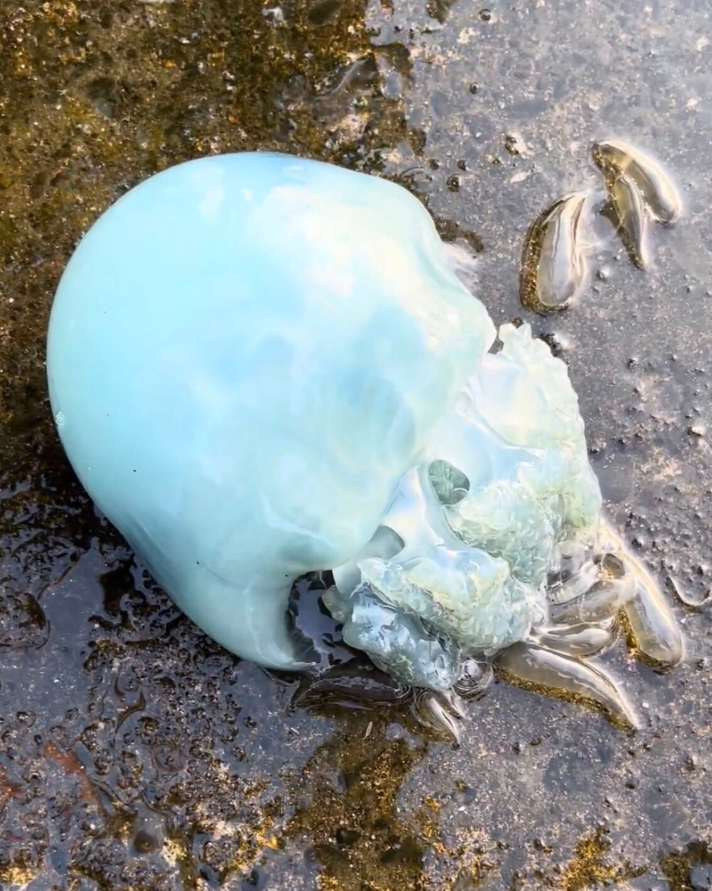
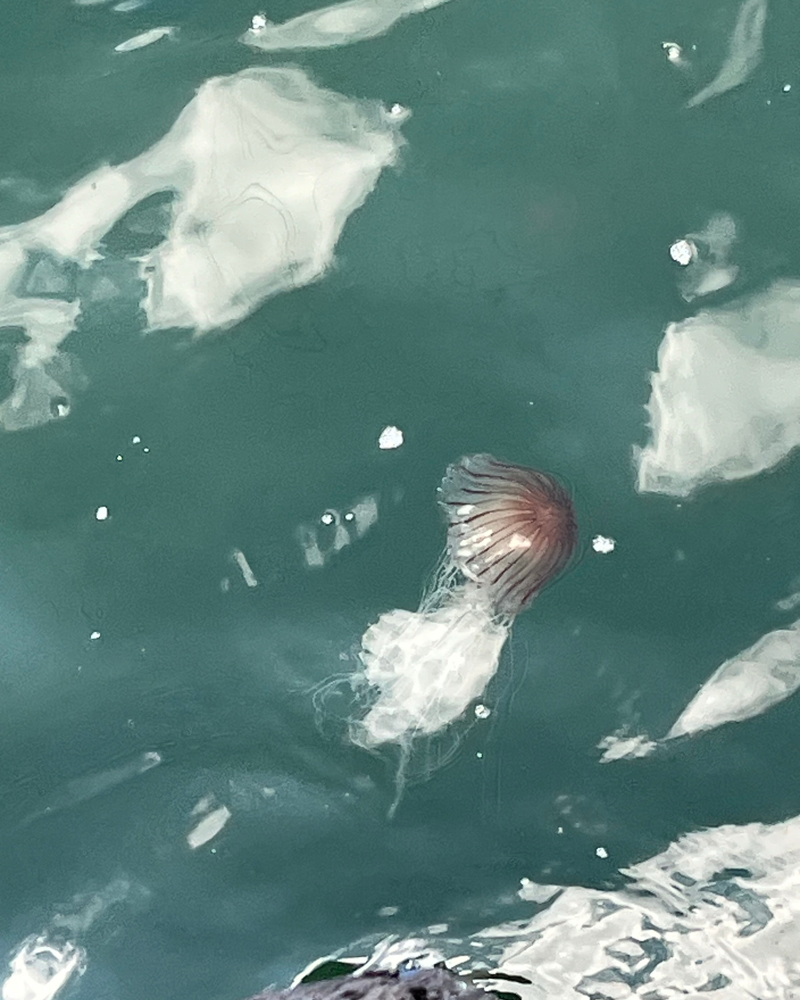
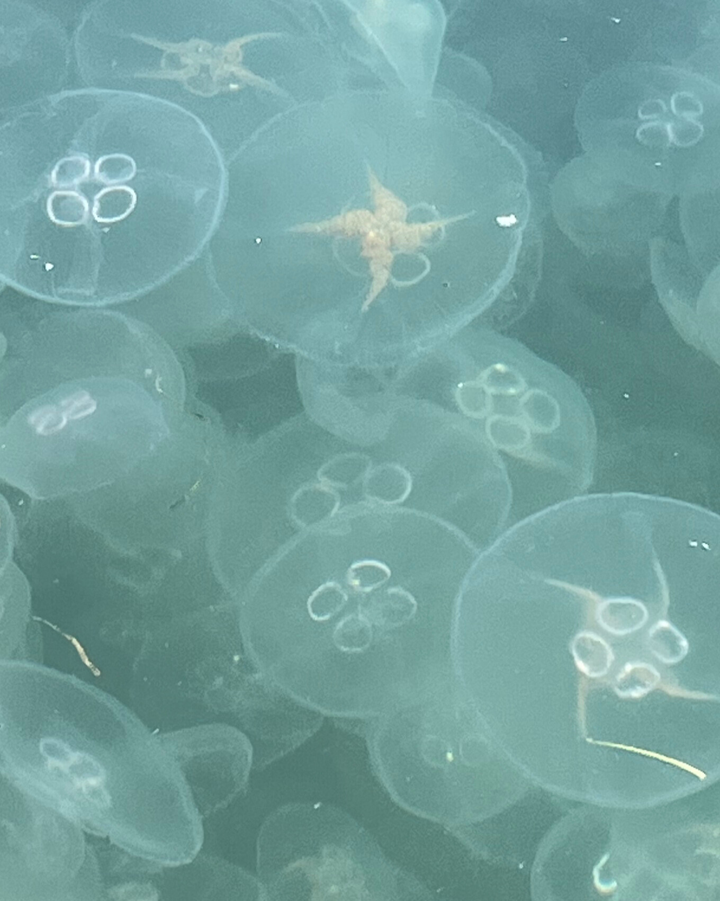
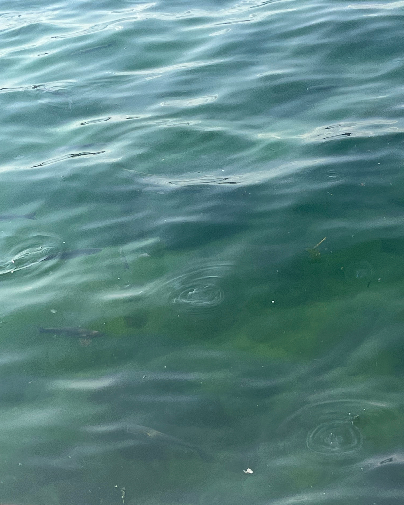

Photography
Home / Photography
このページでは、代表取締役・佐藤愛海が自慢のクラゲの写真を載せていきます。
自然界で撮影したもの、研究中に撮影した面白い生活環など、あなたの知らないクラゲワールドが広がります。
このページを見終わる頃には、他の友達は知らないクラゲの雑学を手に入れているはずです。
存分に楽しんでいただければ幸いです。
野生のクラゲたち
フィールドワークで出会った、ありのままのクラゲたちの姿です。

スナイロクラゲ
スナイロクラゲとビゼンクラゲは元々は別種と考えられてましたが、同種の色違いだということが判明しました。今もどちらの名前も残っており、しばしばクラゲ初心者を混乱させています。ちなみに、ビゼンクラゲは高級クラゲで、食用として最も需要が高いです。画像の個体は、2023年に浜名湖にて撮影。この年も大量に発生していて、湖畔に大量に打ち上がっていました。

アカクラゲ
別名「ハクションクラゲ」。その昔、忍者たちはアカクラゲを乾燥させた粉末をくしゃみを出させる道具として使用していたことからこの名前がつきました。海水浴場にもいるクラゲで、刺されるとかなり痛いので要注意。画像の個体は鳥取県の境港の港にて撮影。立派な口腕が素敵です。

ミズクラゲの仲間(Aurelia sp.)
いわゆる「クラゲ」で、日本近海ではどこでも一般に見られます。Aurelia属で水族館などでよく見られる種類は大体4-5種類ほどいますが、よーく見ないと見分けは筆者にも困難です。画像のものは生殖巣の形から日本のもの(Aurelia coerulea)とは別種だと思われますが、どの種かは不明。こちらの画像はデンマークのSvendborgという港町で撮影。見事に大量発生中で、海面をクラゲが覆っていました。

ミズクラゲの仲間(Aurelia sp.)
同じ場所の写真を使うな！と思いましたね。実はこれはトルコのイスタンブールで撮影したものです。ミズクラゲの仲間は時期と場所が合えば大体どこでも見つかります。ちなみにクラゲにも雌雄があり、ミズクラゲの雌雄は比較的見分けやすいです。口の周りがもふもふしているのが雌です。
クラゲの名前
ここにクラゲの説明文が入ります。生態や撮影時のエピソードなどを記載してください。
クラゲの名前
ここにクラゲの説明文が入ります。生態や撮影時のエピソードなどを記載してください。
クラゲの生活史
クラゲは、ポリプと呼ばれるイソギンチャクのような形から、私たちがよく知る形へと姿を変えます。その不思議な一生を記録しました。
クラゲの名前
ここにクラゲの説明文が入ります。生態や撮影時のエピソードなどを記載してください。
クラゲの名前
ここにクラゲの説明文が入ります。生態や撮影時のエピソードなどを記載してください。
クラゲの名前
ここにクラゲの説明文が入ります。生態や撮影時のエピソードなどを記載してください。